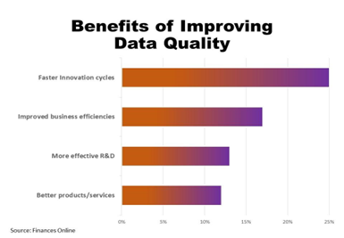

Information Quality
Introduction to Information Quality
Information quality is fundamental for making informed decisions within organizations. It encapsulates dimensions such as accuracy, relevance, reliability, and completeness. Larry P. English's "Information Quality: The Potential of Data and Analytics to Generate Knowledge" extensively covers the significance of information quality in businesses. The book underlines how high-quality information is crucial for effective operations and reliable decision-making processes.
Importance of Accurate Data
Inaccurate data significantly impacts business decisions, leading to flawed strategies and faulty conclusions. Jack E. Olson's "Data Quality: The Accuracy Dimension" provides detailed insights into how inaccurate data affects operational efficiency and decision-making within organizations. Practical examples and case studies elucidate the consequences of relying on faulty information.
Enhancing Information Quality
Enhancing information quality involves adopting various methodologies and best practices. Larry P. English's work delves into data cleansing, validation, and verification processes, emphasizing their role in maintaining high-quality information. These processes ensure that data remains accurate, relevant, and reliable for sound decision-making.
Measuring data quality is crucial for organizations. References such as "Improving Data Warehouse and Business Information Quality" by Larry P. English and "Data Quality Assessment" by Arkady Maydanchik provide frameworks, methodologies, and tools for assessing and improving data quality within an organization.
Metrics and Tools for Assessing Information Quality

Measuring data quality is crucial for organizations. References such as "Improving Data Warehouse and Business Information Quality" by Larry P. English and "Data Quality Assessment" by Arkady Maydanchik provide frameworks, methodologies, and tools for assessing and improving data quality within an organization.
Real-time Data Quality Management
Real-time data quality management is an emerging aspect in information systems. References like "Real-Time Data Quality: A Critical Success Factor for Successful Customer Data Integration" by Mandy Chessell and Harald Smith explain the importance and methods of managing data quality in real time for dynamic business needs.